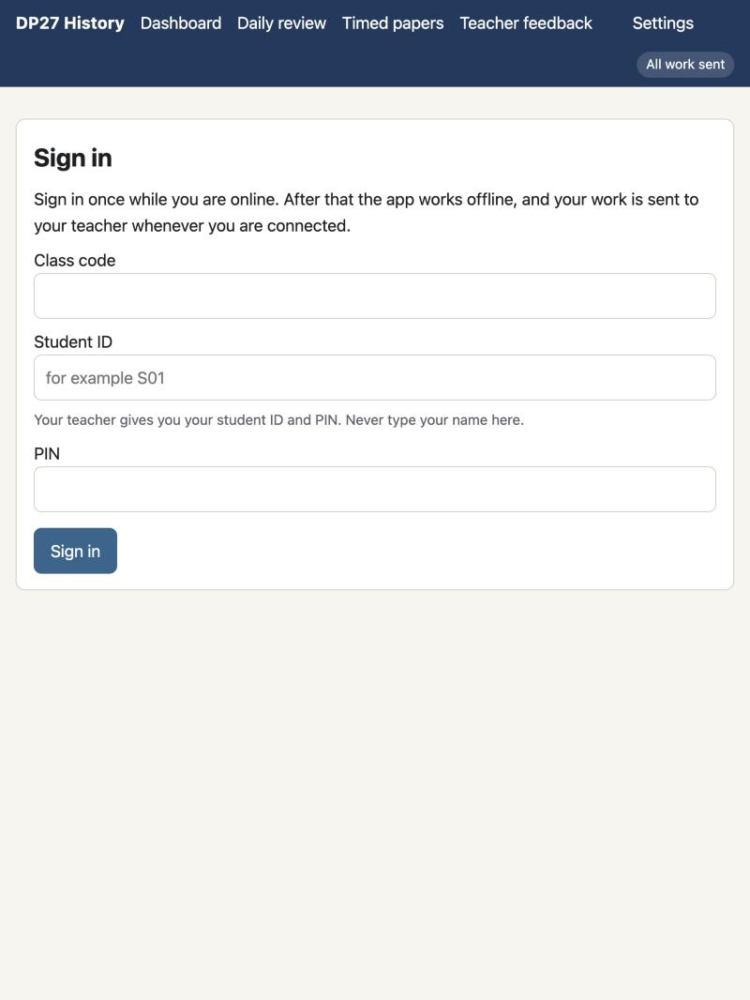
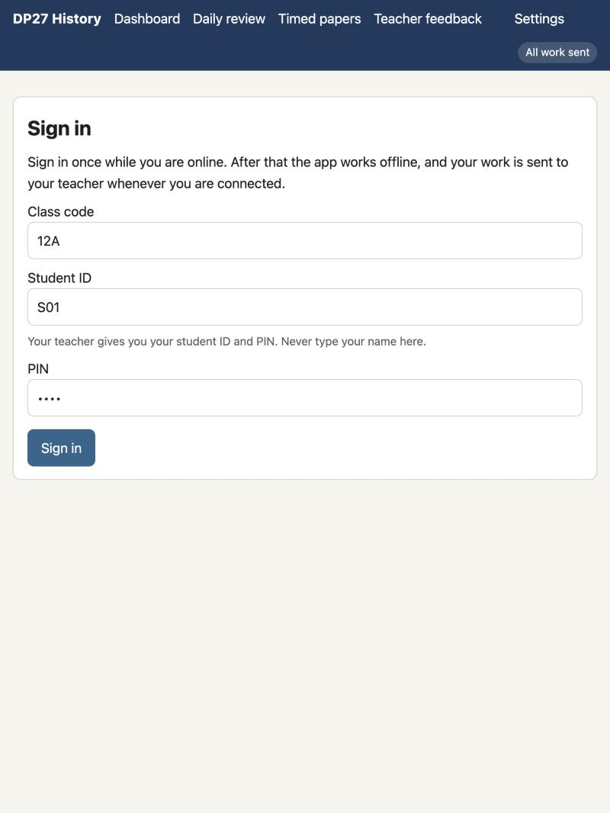
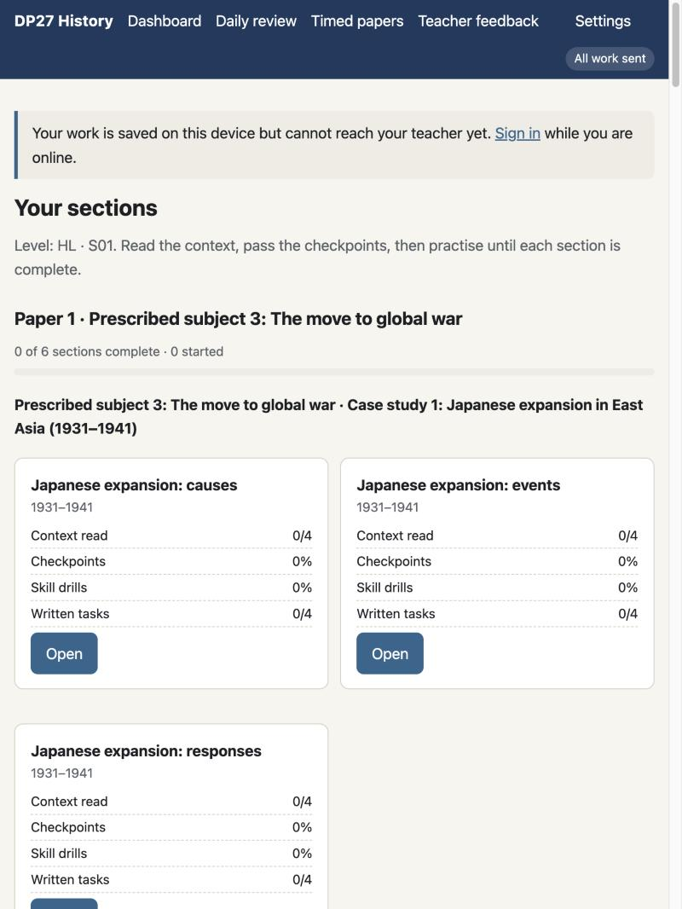

One sign-in while you're online, then it works anywhere — even with no signal. Open this address in your browser: https://k1ona.github.io/dp27-history-practice/
1. Open the link and sign in
You only need to do this once, and you need the internet for this one step. After that, everything works offline.
Open the address above. You'll see a Sign in screen.
Enter the class code, your student ID (for example S01) and your PIN — your teacher gives you all three.
Tap Sign in. You'll land on your dashboard, with your sections listed.

The sign-in screen

Filled in and ready to tap Sign in

Your dashboard
Only your teacher's class code, your student ID and your PIN go in — never your name. Keep your PIN to yourself.
2a. On an iPad (Safari)
With the app open in Safari, tap the Share button (the square with an arrow pointing up), in the toolbar.
Scroll down the share sheet and tap Add to Home Screen.
Tap Add in the top-right corner.
A DP27 History icon now sits on your Home Screen. Open the app from there from now on, not from Safari.
2b. On Windows (Edge or Chrome)
With the app open, look at the right-hand end of the address bar for an install icon (a small screen with a down arrow), or open the ⋮ menu.
Choose Install DP27 History (or Apps → Install this site as an app).
Click Install in the dialog that appears.
The app now has its own window and a shortcut on your Start menu or desktop. Open it from there from now on.
3. Check it works offline
Turn on Airplane Mode (iPad) or disconnect from Wi-Fi (Windows).
Open the app from its icon. Your dashboard should load exactly as before.
Everything you do offline — reading, retrieval questions, written tasks, Timed papers and Daily review — is saved on your device and sent to your teacher automatically the next time you're back online. The top-right corner tells you the state: All work sent or waiting to send.
If something goes wrong: if sign-in says the server can't be reached, check you're online and try again — that step needs the internet. If an iPad reinstall or a browser reset ever clears your device, sign in again with the same student ID and PIN: your teacher can restore your saved work from their side. For anything else, ask your teacher.